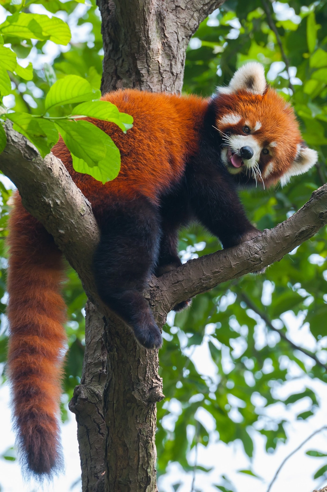
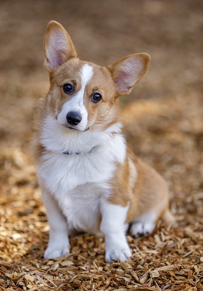

The red panda is a carnivoran native to the eastern Himalayas and southwestern China.
It is listed as Endangered on the IUCN Red List because the wild population is estimated
at fewer than 10,000 mature individuals and continues to decline due to habitat loss and fragmentation, poaching, and inbreeding depression

The Pembroke Welsh Corgi is a cattle herding dog breed that originated in Pembrokeshire,
Wales. It is one of two breeds known as a Welsh Corgi. The other is the Cardigan Welsh Corgi,
and both descend from the line of northern spitz-type dogs.
Weird person who sometimes loses himself in music and starts
acting like a madman in public, bobbing his head, doing weird hand motions.
- Can be lured out with the promises of food
- Easily hypnotised by great music
- Prone to silliness
- Mysterious....?